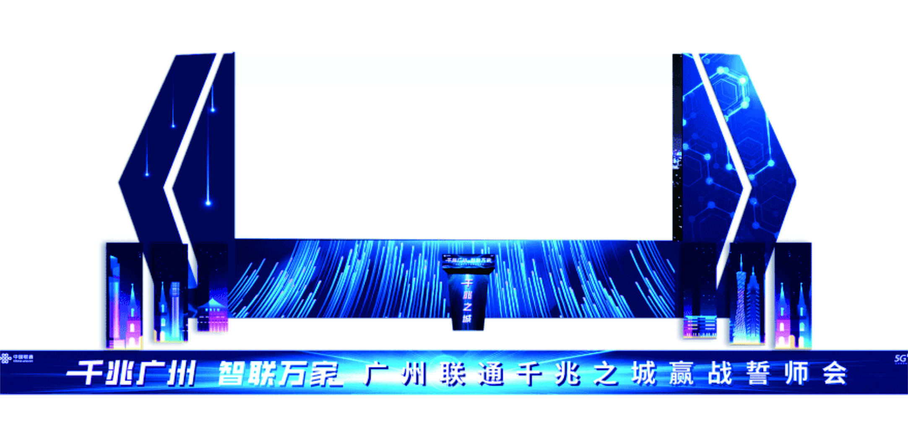

Event Entrance
会展入口与空间导视
从活动入口、门头结构到舞台背景，视觉系统需要在第一时间完成品牌识别、主题传达与氛围建立。以高饱和蓝紫色光效、科技线条与城市景观元素，形成更具现场感的视觉入口。
Design Focus主题识别清晰、空间氛围强、现场记忆点突出。
Application入口门头、背景板、会场导视、签到区与打卡装置。
Result强化现场传播效果，提升活动整体专业度与参与感。